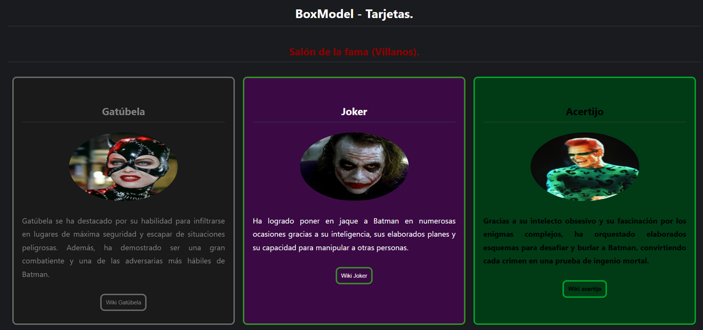
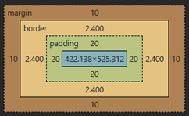

Desarrolle una documento utilizando HTML y CSS que reproduzca la imagen proporcionada, respetando su estructura y contenido.
Imagen:
zoom: click derecho en la imagen -> Abrir nueva pestaña. zoom
Para resolver la actividad, tengan en cuenta las siguientes recomendaciones CSS
Las Tres tarjetas deben estar contenidas dentro de un mismo elemento div. A este contenedor deberán aplicarle display:flex; para conseguir que las tarjetas se ubiquen una al lado de la otraa.
Para conseguir que las tres tarjetass tengan aproximadamente el mismo tamaño y ocupen un espacio similar dentro de la panatalla, pueden utilizar la unidad como width: 30vw;. Este valor puede variar dependiendo del tamaño y la resolución de la pantalla que estén utilizando, pero en lo general un valor de entre 30vw y 35vw debería permitir que las tres tarjetas se acomoden correctamente.
Para lograr que una imagen tenga forma circular, pueden utilizar la propiedad border-radius con un valor de 50%
Los botones deberán tener un efecto cuando el usuario coloque el cursor sobre ellos. Para esto pueden utilizar la pseudoclase :hover. La idea es que, al pasar el cursor, el color de fondo pase a ser el color que tenían las letras y el color de las letras pase a ser el color que tenía el fondo. (Intercambiar el color de letra por el fondo.)
Espaciado, bordes, texto y colores.
margin, border double, padding de la tarjeta y el botón. (El contenido puede variar según el tamaño de la ventana o la pantalla desde la que se visualice).

text-align: justify;
Colores Gatúbela (#1a1a1a y #808080)
Colores Joker (#3B0A45 , #39FF14 y #FFFFFF)
Colores Acertijo (#003B15 , #00FF41 y #black)
{kind=link}
{kind=link}
{kind=link}